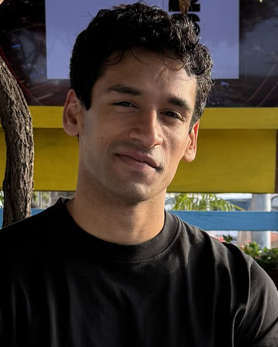

Quantum Information PhD candidateHarvard University
Varun Menon
I am a researcher working on problems in quantum error correction and fault-tolerant quantum computation. I am also interested in many-body quantum physics and quantum algorithms for simulating complex systems.
I'm a doctoral candidate in the Lukin Group at Harvard, advised by Mikhail Lukin, and an Ashford Graduate Fellow. Most of my recent work is on finding efficient ways to perform logic on quantum low-density parity-check codes. This includes designing protocols that prepare magic states and run logical gates with far less overhead than conventional approaches. I'm also interested in what fault-tolerant quantum computers should do once they exist, especially simulating interacting many-body quantum systems. I'm excited about how frontier AI models can accelerate quantum computing research, and much of my work is supported by and done in collaboration with Anthropic's AI for Science program.
Prior to starting my PhD, I studied physics, computer science, and applied mathematics at UC Berkeley. I have also worked on quantum algorithms at Google Quantum AI, quantum simulation of strongly correlated systems at IBM Quantum, and superconducting hardware at Q-CTRL.
01ResearchA full publication list is on my Google Scholar profile and my INSPIRE-HEP page, which has a more up-to-date citation count.
Fault-tolerant logic on qLDPC codes
Quantum LDPC codes can sharply reduce the number of physical qubits needed per logical qubit. A central open problem is performing logic on them without giving those savings back. My work aims to minimize the spacetime cost of the key components of performing logic on qLDPC codes, which include magic-state preparation, lattice surgery, and quantum memory, as well as their efficient implementation on neutral-atom hardware.
- Magic tricycles: efficient magic-state generation with finite block-length quantum LDPC codes Physical Review X 16, 021014 (2026)
- Single-shot magic state factories for quantum LDPC codes arXiv:2610.10731 (2026)
- Efficient logic with ultra-high-rate quantum codes arXiv:2610.06749 (2026)
- The practical cost of magic state cultivation arXiv:2610.06828 (2026)
- Syndrome extraction circuits with near-optimal depths for practical quantum error correcting code families Design Automation Conference (DAC '26)
- Non-Clifford gates between stabilizer codes via non-Abelian topological order PRX Quantum 7, 010361 (2026)
- Round-robin CCZ is all you need A post on my friend Sunny He’s blog that we wrote together. Sunny is a graduate student at MIT and an expert on qLDPC surgery. The post explores how any code-space-preserving circuit of diagonal gates is generated by certain primitive “round-robin” gates, and applies this to finding transversal non-Clifford gates. June 2026
Quantum many-body physics
My work in this area has focused on entanglement structure in quantum magnets, properties of exactly solvable spin chains, and non-equilibrium phases of matter. I study these phases numerically with tensor-network and sparse Pauli-propagation methods, and design circuits to realize them on quantum hardware.
- Realizing anomalous Floquet phases and time-crystalline transport in an interacting disordered spin system on superconducting quantum computers Manuscript in preparation
- Observation of multipartite spin entanglement in a cuprate chain arXiv:2609.08134 (2026)
- Symmetries, correlation functions, and entanglement of general quantum Motzkin spin-chains arXiv:2408.16070 (2024)
- Multipartite entanglement in the one-dimensional spin-½ Heisenberg antiferromagnet Physical Review B 107, 054422 (2023)
Quantum algorithms
Algorithms for simulating interacting quantum systems and extracting their spectra more cheaply.
- Applications of shadow Hamiltonian simulation to equilibrium dynamics Manuscript in preparation
- Memory-efficient quantum simulation via operator-space truncation Manuscript in preparation
- Reducing the cost of phase estimation in simulation via super-resolution spectroscopy Manuscript in preparation
02Selected talks
-
QEC 2026
Efficient magic-state generation with tricycle quantum LDPC codes
-
TQC 2026
Magic-state generation with finite-length quantum LDPC codes
-
QIP 2025
Simulability and exact results in a class of highly entangled spin chains
-
Google Quantum AI Tensor Network Seminar 2024
Quantum Motzkin spin-chains: exact results and classical simulation invited talk
03Experience
-
2023–
Harvard University, Lukin Group Quantum Information PhD Candidate · Quantum error correction and fault tolerance
-
2026
Google Quantum AI Student Researcher · Quantum algorithms team
-
2024
IBM Quantum Quantum Research Scientist Intern · Many-body quantum simulation
-
2022–23
Q-CTRL Quantum Computing Research Scientist · Error mitigation with machine learning